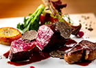
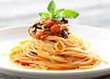
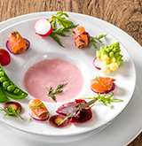
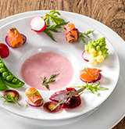
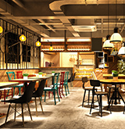

おすすめのエリア
ホットなスポット
ジャンルで選ぶ

フレンチ

イタリアン

スイーツ
こだわりで選ぶ
ライターのおすすめ
究極の十割蕎麦
全国から仕入れた蕎麦の実を、産地ごとの特性に合わせて挽き、 持ち味を最大限に引き出す至高のそば。 フレンチの技法も加えて 繰り出されるSOBAコースは意外性に富んでいるが、実は基本に 忠実な仕事がされています。 香ばしい焼きそばがきもおすすめ。
ケバブだけじゃない、トルコ料理
トルコ料理というと日本ではケバブやドンドルマ（トルコ風アイス） くらいしか知られていませんが、実は世界三大料理の一つ。 ハーブ やヨーグルトを多用し、香辛料たっぷりの味わいはまさに異国 情緒。 香味と酸味を中心に捉えた味わいをご堪能ください。
ユーザーレビュー
食いしん坊主
男性・東京都
サービスがいまいち。。。
レビューの高評価に期待して伺ったのですが。接客態度があまりに悪く印象は最悪。確かにお料理は美味しかったですが、凝った仕事をしていても、そもそもどのような素材を利用してどんな調理法で供されたものなのか一切説明がなかったので孤につつまれたような印象でした。
 
スイーツ大好き
女性・兵庫県
内装の美しさに感動！
以前から友人と話題に上がっていたお店だったので楽しみにしていました。ヴィンテージの家具や赤で統一されたモダンな内装。あらゆるディテールにミッドセンチュリーモダンを意識した作りでオーダー前にすでに満足！カフェメニューも充実していて、近くのバティスリーから仕入れているケーキも美味しゅうございました。

キャンプ太郎さん
男性・東京都
ポイント
130pt
ランク
プレミアム